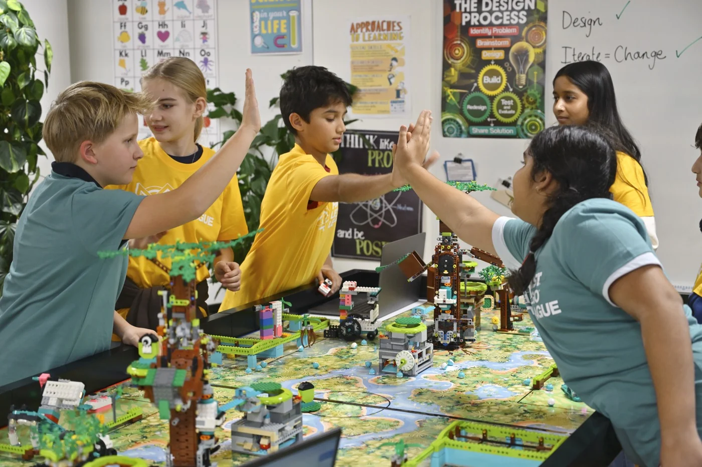
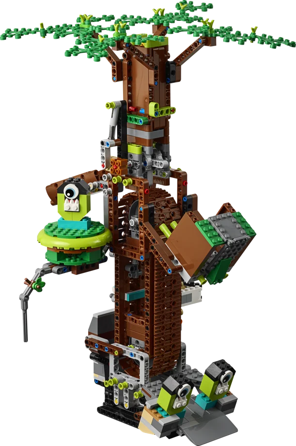

FIRST® LEGO® League Portugal
Quem disse que LEGO era só construir?
Começa com peças LEGO na sala de aula. Junta programação, experimenta a inteligência artificial na Future Edition e leva a tua solução a jogo.
Inscrições Abertas! ↗
Na escola
Dá a próxima aula à volta do robô.
Leva um desafio de robótica para a sala de aula. Os alunos dividem tarefas, constroem modelos e experimentam soluções.
Para preparar as sessões, o professor conta com formação, um guia e o apoio da Fundação da Juventude.
Comparar Founders e Future →Uma comunidade global.
Um desafio em comum.
FIRST LEGO League em todo o mundo
- países
- 100+
- eventos
- 4.000+
- participantes
- 800.000+
Temporada 2026 / 2027
BIOGLOW™
A biodiversidade é o tema deste ano. Descobre a árvore e os outros modelos do campo.
Explorar o campo →